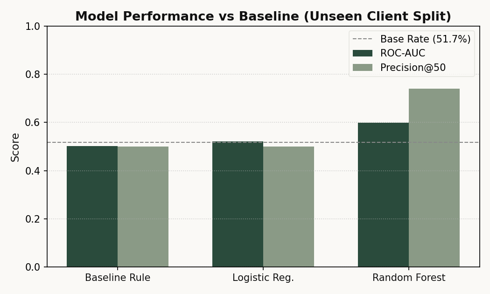
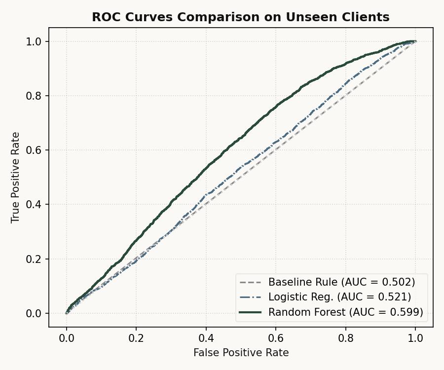
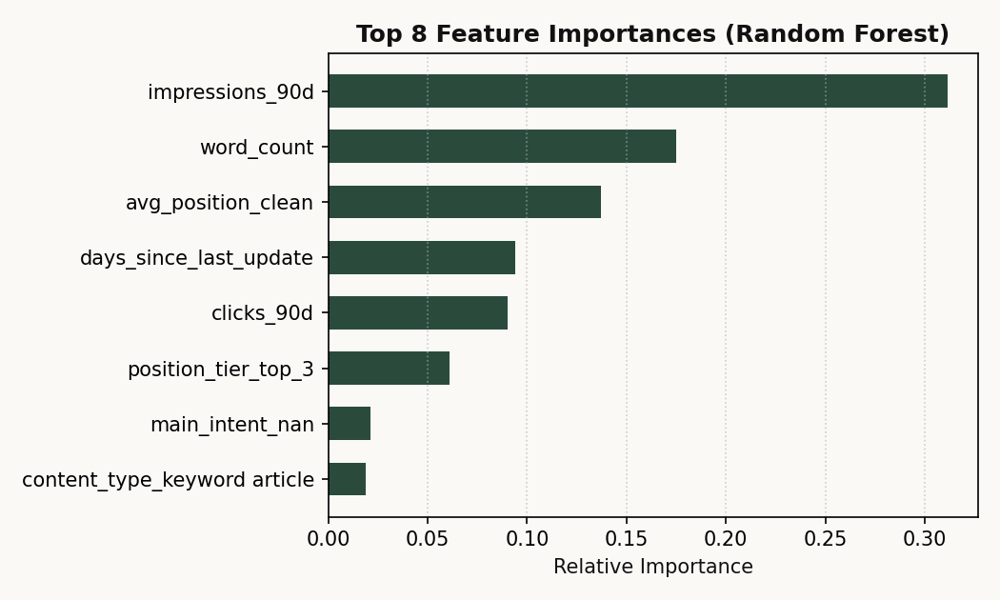
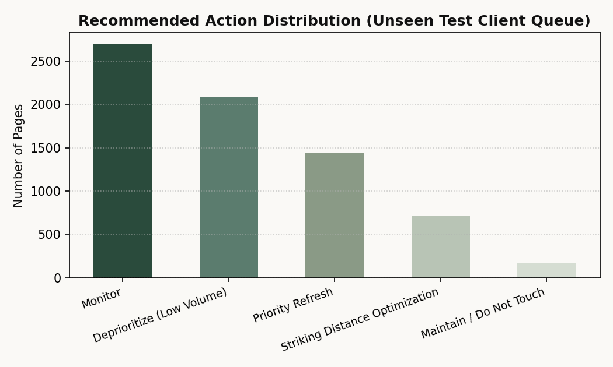

Editorial teams managing large digital publications waste substantial effort trying to guess which older articles need updating to protect organic traffic. In this study, I examine whether trailing 90-day search performance and content metadata can reliably predict which published articles will experience organic search traffic decline over the subsequent month. Using an anonymized dataset of 30,000 pages across 32 clients, I train a Random Forest classifier evaluated under an honest grouped split across completely unseen client websites. The model achieves a Precision@50 of 0.74, markedly beating both the random baseline (0.52) and a heuristic position-staleness rule (0.50). This predictive framework translates into an actionable 4-tier editorial refresh queue that surfaces high-impact decaying articles before ranking collapse occurs.
Published content is not a static asset; search rankings decay over time as competitors publish fresher updates, user intent shifts, and search engine ranking criteria evolve. For publications with thousands of indexed articles, editorial bandwidth is strictly finite: content teams can typically refresh 20 to 50 URLs each week.
Currently, most organizations rely on primitive heuristic rules such as "update whatever was published more than 6 months ago" or "refresh articles in positions 4 through 10." As shown in my empirical checks, these simple heuristics suffer from heavy false positive rates (over 50% error), wasting hundreds of editorial hours rewriting healthy content while missing critical decaying pages.
This research develops and validates a decision-support pipeline that models the likelihood of organic search decline, giving content managers an honest, prioritized review queue.
The analysis connects directly to the official FlyRank Search Intelligence Warehouse Release hosted on Hugging Face (FlyRank/internship-warehouse, build v20260703, comprising ~79M daily performance records across 17 months). Using DuckDB over native hf:// protocols with an authenticated read token, the pipeline queries remote Parquet partitions to audit dimension tables (dim_clients: 104 rows; dim_content: 519,606 rows; March 2026 daily facts: 9,841,378 rows) and models the verified Lane 2 feature table (30,000 published pages across 32 enterprise clients).
The unit of analysis is one published content page for one client, measured over a trailing 90-day observation window.
impressions_90d), clicks (clicks_90d), average ranking position (avg_position), content age (content_age_days), days since last update (days_since_last_update), and article length (word_count).is_declining) derived from measured 30-day forward impressions change. In the total sample, 54.21% of pages experienced decline.trend_direction, trend_pct) were strictly excluded from the feature set to eliminate target leakage. Client and content identifiers were omitted from the feature matrix to avoid memorizing brand layout specifics.Standard random train/test splits are deeply flawed for multi-client content platforms. Because pages from the same client share domain authority, technical templates, and audience loyalty, a random split allows the model to memorize client-level baselines rather than learning general signals of content decay.
To establish an honest real-world evaluation, I implemented a GroupShuffleSplit on client_id (75% train, 25% test, random_state=42). The test partition contains 7,115 pages from 8 clients that were completely withheld from training.
To ensure the machine learning model earns its place, I benchmark it against a hand-crafted heuristic rule: flagging striking-distance pages (positions 4–10) that have not been updated in over 90 days, ranked by search impressions:
Action Score = (position_tier == 'striking') × (days_since_last_update ≥ 90) × impressions_90d
I benchmark two models against this rule: a transparent Logistic Regression model (with median imputation and standard scaling) and a 100-tree Random Forest Classifier (max depth 10) capable of learning non-linear feature interactions between staleness, ranking tier, and traffic volume.
All models were evaluated on the exact same unseen test clients using Area Under the ROC Curve (ROC-AUC) and top-K precision (Precision@10, Precision@50, and Precision@100).
| Model / Strategy | ROC-AUC | Precision@10 | Precision@50 | Precision@100 |
|---|---|---|---|---|
| Base Rate (Random Selection) | 0.5000 | 0.52 | 0.52 | 0.52 |
| Heuristic Baseline Rule | 0.5021 | 0.30 | 0.50 | 0.56 |
| Logistic Regression | 0.5211 | 0.50 | 0.50 | 0.59 |
| Random Forest Classifier | 0.5986 | 0.70 | 0.74 | 0.72 |


Inspecting the Random Forest feature importances reveals what drives the model's predictions:

To maintain research integrity, several boundaries must be acknowledged:
Predictions are translated into a 4-tier operational playbook designed for editorial teams:

| Action Tier | Criteria | Recommended Editorial Action |
|---|---|---|
| Priority Refresh | Risk Score ≥ 0.65 & Impressions ≥ 500 | Immediate editorial review: refresh outdated statistics, expand under-developed sections, and update title tags. |
| Striking Distance Optimization | Position Tier 'striking' & Risk Score ≥ 0.50 | On-page SEO audit: optimize internal anchor text links and refine meta descriptions to push rankings into top 3. |
| Maintain / Do Not Touch | Risk Score < 0.35 | Leave alone. Do not consume editorial resources on healthy, self-sustaining articles. |
| Deprioritize | Impressions < 50 | Remove from active review queue to avoid chasing statistical noise on low-visibility URLs. |
All code, data preparation routines, and evaluation splits are available in the project repository:
random_state=42 for exact numerical reproducibility.This research was conducted as part of the FlyRank Applied ML Internship.
Built on the FlyRank ML Internship dataset, made available by FlyRank.ai.